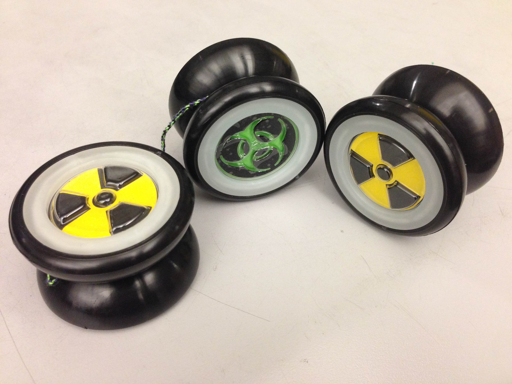
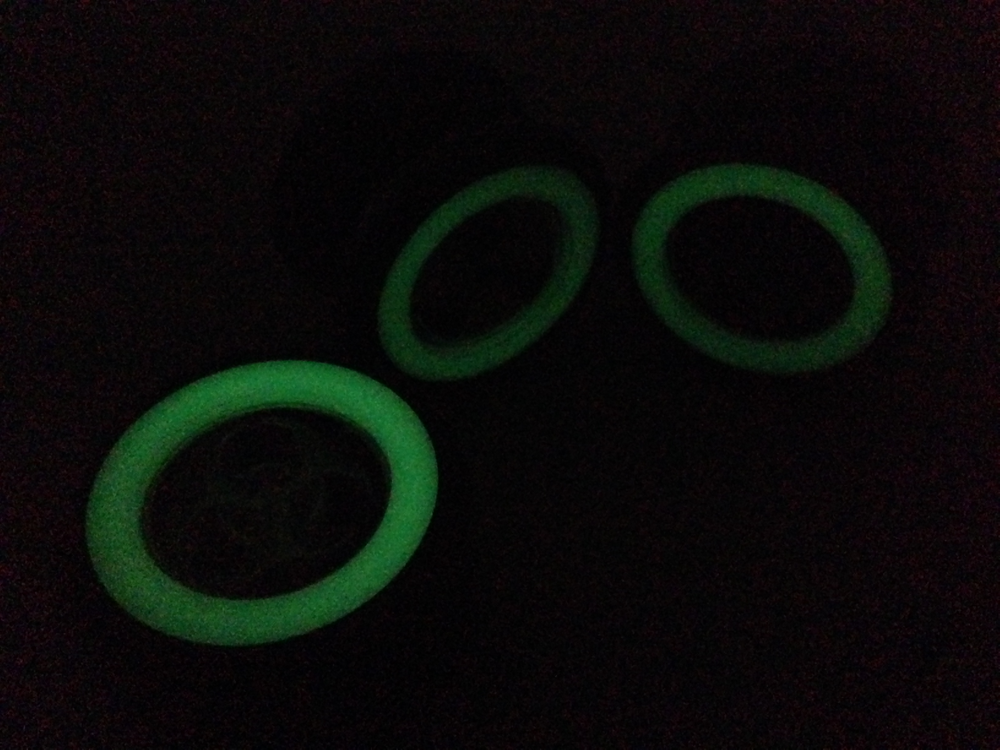
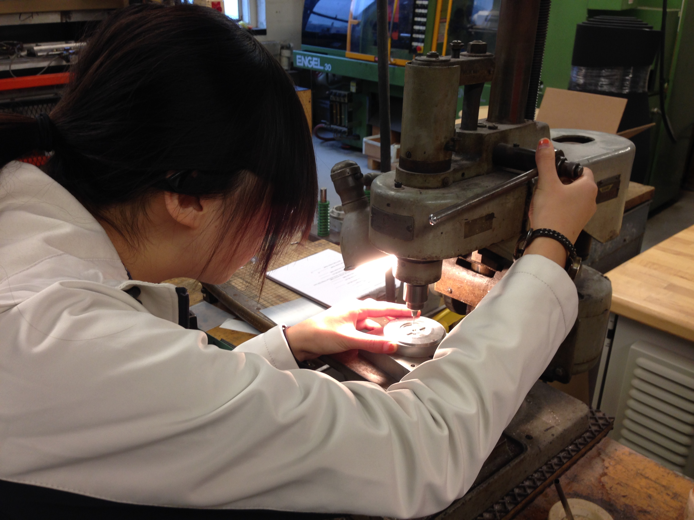

CONNIE LIU
MANFACTURING YOYOS
Design & Assembly at Scale
This project was for MIT's Advanced Design and Manufacturing Class (2.008). Each group worked on a team of 6 to design, manufacture, and assemble 50 identical yoyos. Put to this challenge, our team started with a few different design ideas. With aesthetics and stability in mind, we decided on a dual-themed yoyo depicting a radioactive and biohazard sign, with a glow-in-the-dark rim to go with the theme.
We then machined the molds for our thermoformed and injection molded parts. After a few runs to optimize parameters, we did our final production runs. We took careful record of part measurements that were critical to assembly during this process. Using this information, we were able to determine that although the process capabilities for the thermoformed parts were high, the injection molded parts had quite variable dimensions.
The assembly of the parts took a good amount of time, even with our six-man pop-up sweat shop. Our original idea of spraypainting the thermoformed parts was soon discarded after we realized that the features were too detailed to get a nice overlay of two colors. However, instead of discarding the idea, we brainstormed new ways to color our parts and settled on using vinyl stickers. Although there were some difficulties with air bubbles in the stickers, they provided us the nice color finish we were looking for.

Lessons Learned
Design for Manufacturing & Assembly: This project required a focus on design for manufacturing and assembly straight from the start. Thinking practically about scale-up instead of thinking in the prototyping mindset usually taught in classes helped me to learn how to design for the long term. Although we considered manufacturing in every step of the design process, we still ran into a few issues at the end. For example, some tasks would be difficult and expensive to scale up, such as the sticker application. However in an actual manufacturing setting, we could have designed the yoyo using colored thermoplastics to avoid this.
Mold Design & Tolerancing: I used both Mastercam and Solidworks to design the part molds. I became very familiar with these softwares and the tolerancing required to make a well-fitting yoyo. Taking shrinkage and other factors into consideration, these greatly influenced our mold dimensions and designs.
Team Dynamics: Working on a team of six led to design disagreements and schedule conflicts throughout the project, and forced us to be flexible with our ideas and our schedules. My team's ability to work through these difficulties made me appreciate the value of having a good team. We purposefully focused our discussions around practicality and major design milestones to keep meetings efficient and easily completed our yoyos by the deadline.
A link to the final poster detailing concept decision, design specifications, and manufacturing costs can be found here.